このツールについて
予約して乗る乗合バス・乗合タクシー（デマンド交通）の、区域・乗り降りできる時間帯・予約の方法を表す標準形式 GTFS-Flex のデータを、ブラウザだけで作成・編集・検証するツールです。運行事業者や自治体の担当者が、データを作って確かめ、公共交通オープンデータセンター（ODPT）に提供できる形で書き出すことを目指しています。日本の標準仕様 GTFS-JP 4.0（2026 年 3 月）にも対応しています。
インストールや登録は要りません。データはブラウザの中だけで扱い、どこにも送りません。パソコンのブラウザ（Chrome・Edge・Firefox・Safari の最新版）で使ってください。
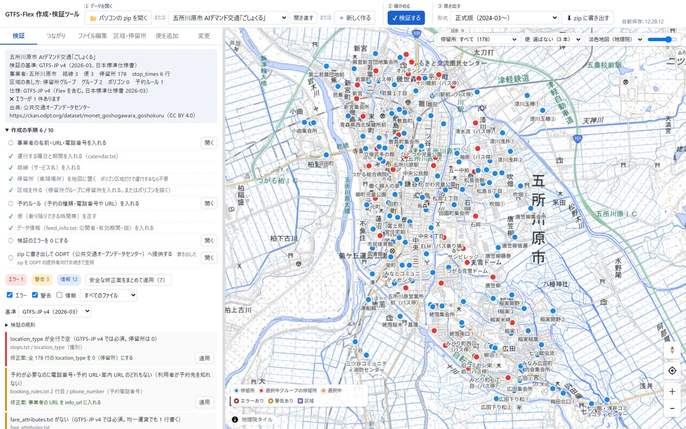
1データを開く
画面の上の「① データを開く」から、3 通りで始められます。
- 📂 パソコンの zip を開く … 手元の GTFS / GTFS-Flex の zip。文字コード（UTF-8・Shift_JIS）は自動で見分けます
- 🌐 公開データから選ぶ … ODPT のデマンド交通 16 件と、海外の例（OpenTripPlanner の試験データ 3 件）。選ぶとすぐ開きます。開き直す で元の状態から開き直せます
- ＋ 新しく作る … まっさらから作ります（次の 2）
古い書き方（GTFS-Flex のドラフト版）のデータは、正式版（2024 年 3 月〜）に直して扱い、何を直したかを概要に出します。正式版で表せない所は、そう知らせます。
2まっさらから作る
＋ 新しく作る で、事業者名・URL・予約の電話番号・サービス名・区域の表し方・運行曜日・期間・乗り降りできる時間帯・予約の種類を入れると、必要なファイルがそろいます。必須の欄には * が付いています。
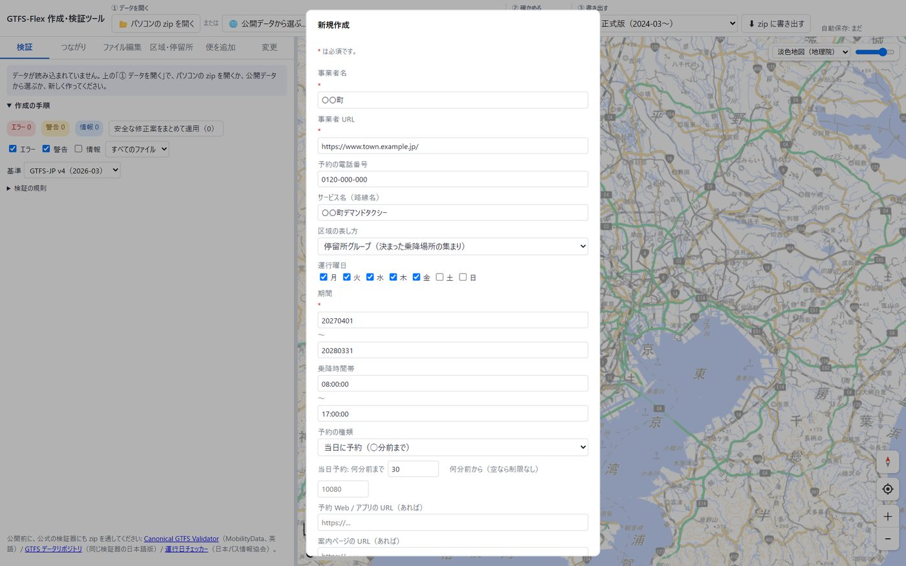
区域・停留所（「区域・停留所」タブ）
- 停留所は、地図をクリックして追加 を押してから地図をクリックした所に置きます。ドラッグで移動 で動かせます
- 停留所グループに停留所を出し入れするには、地図で停留所を出し入れ を押して地図の停留所をクリック。全停留所を入れる・空にする もあります
- 区域ポリゴンは 地図に描く でクリックした所が頂点になり、ダブルクリックか Enter で確定。頂点はドラッグで動かし、辺の中ほどの点で頂点を足せます
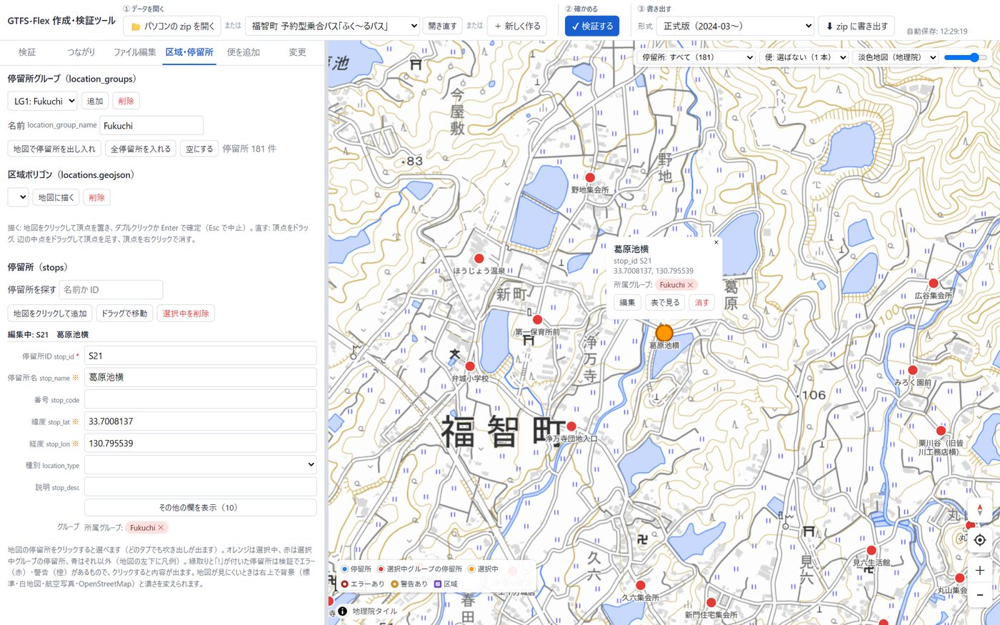
便（「便を追加」タブ）
路線・運行日・乗る所と降りる所（グループ・区域・停留所）・乗り降りできる時間帯・予約ルールを選んで足します。区域の中で乗り降りする便は、ガイドラインの形（乗る行と降りる行の 2 行）で作ります。
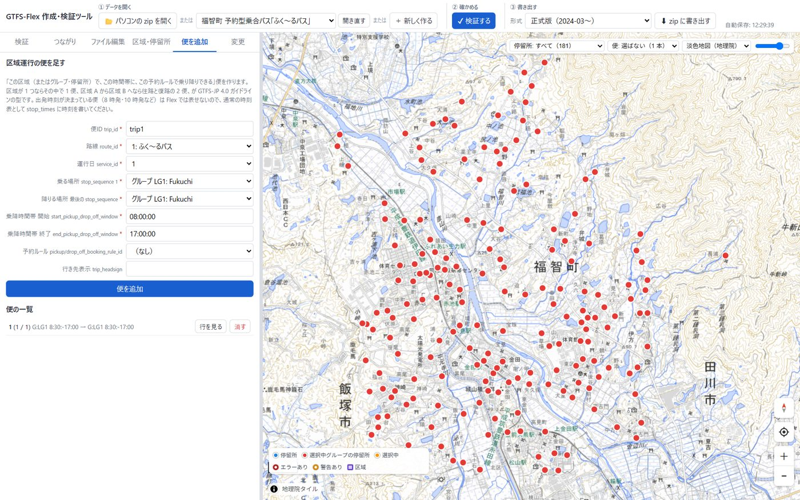
3確かめる
編集すると自動で検証します（✔ 検証する でいつでも）。指摘は「検証」タブに、エラー・警告・情報 の順で並びます。押すとその行・欄へ移り、← 検証結果に戻る で戻れます。
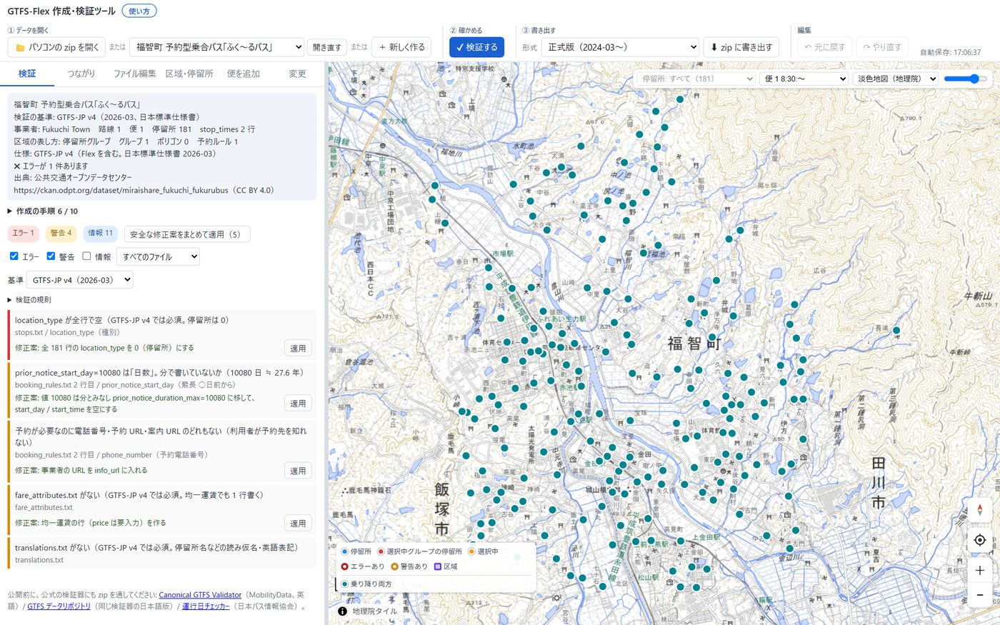
- 検証の規則は 12 分類（仕様の必須・条件・型、ファイル間の参照、事業者、停留所、路線、運行日、区域、グループ、予約ルール、時刻と乗降時間帯、GTFS-JP の決まり、使われていないもの）。「検証の規則」から外すこともできます
- 基準を選べます: GTFS-JP v4（2026-03）・GTFS-JP 第 3 版・国際仕様のみ。海外のデータを開くと、自動で国際仕様になります
- 修正案を 1 件ずつ、または 安全な修正案をまとめて適用（値の整形など。行の削除は含みません）
- 同じ種類の指摘がたくさんあるときは 1 つにまとめ、件数と理由を出します。使われていない停留所は「まとめて消す」か「グループに入れる」を選べます
- エラーは赤、警告は黄色の印が、ファイルの選択欄（✖ / △ と件数）・表のセル・フォームの欄・地図の停留所と区域にも付きます
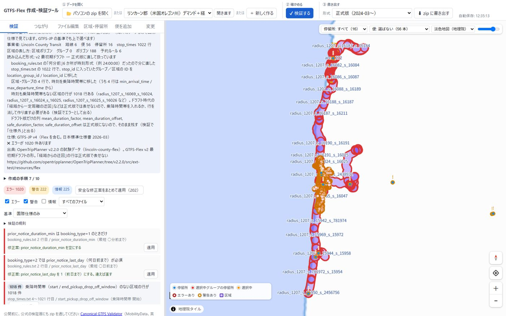
4つながりの図・便をたどる
「つながり」タブでは、ファイルを箱、参照（ID）を矢印で描きます。矢印の数字は参照している行の数、途切れ N は参照先がない行の数です。矢印ごとに「必須・どれか 1 つ必須・推奨・任意」を書き分け、使っていない任意の矢印は灰色です。箱や矢印を押すと説明と直し方、途切れた行の一覧が出ます。
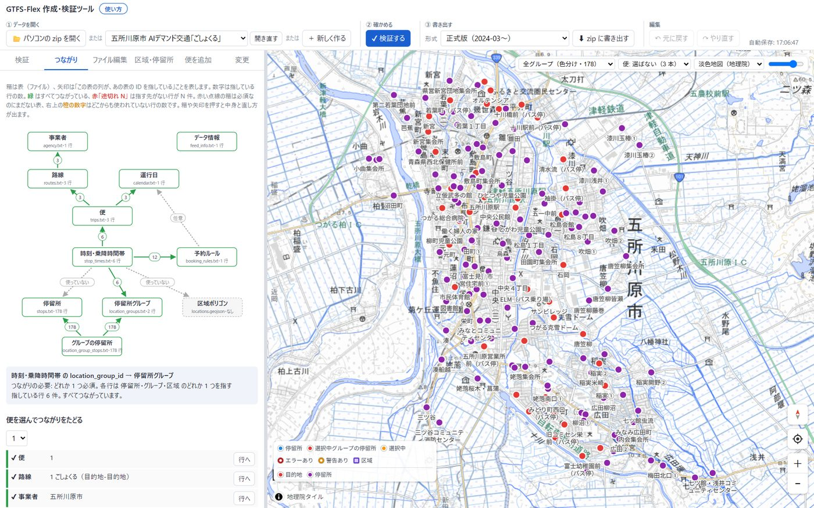
「便を選んでつながりをたどる」で便を 1 本選ぶと、便 → 路線 → 事業者 → 運行日 → 乗降場所（グループ・区域・停留所、時間帯、予約ルール）を ✔ / ✖ で順に示します。
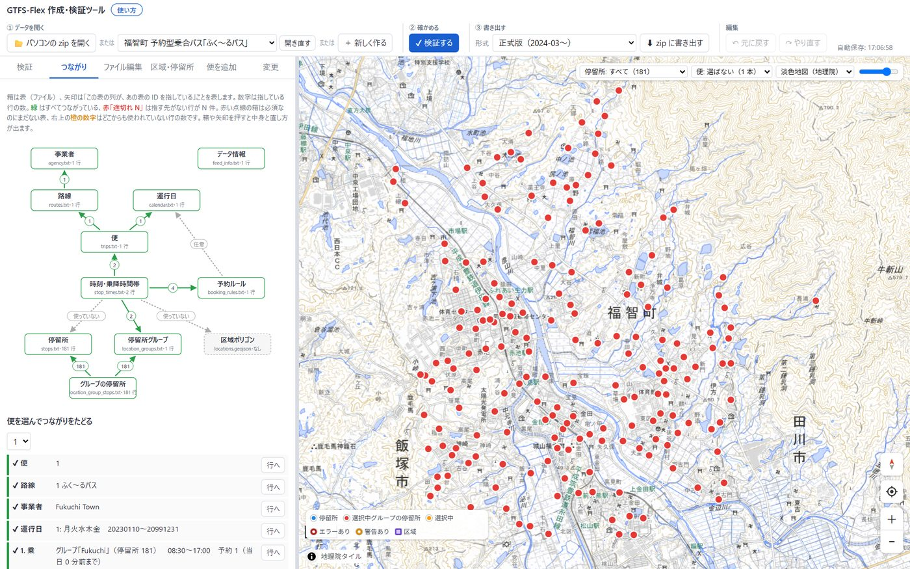
5地図
| マウス | 左ドラッグで移動、右ドラッグで回転、ホイールで拡大・縮小 |
|---|---|
| 指 | 1 本で移動。2 本でひねると回転、広げる・狭めると拡大・縮小、横に並べて上下に動かすと傾き |
| 右下のボタン | 上から 方角（押すと北が上・真上から）・現在地・拡大・縮小 |
| 右上 | 地図に出す停留所（すべて／全グループ（色分け）／グループに入っていない／グループごと）、地図に出す便、背景の地図（地理院地図の淡色・標準・白地図・写真、OpenStreetMap）と濃さ |
- 便を選ぶと、その便の乗る所・降りる所・両方を色で分け、使う区域以外を薄くします。決まった停留所を回る便は、順番の番号と経路の線を出します
- 区域ポリゴンを押すと、名前・面積・使っている便・乗り降りできる時間帯・予約・その区域の指摘が出ます。区域が重なる所では小さい区域を選び、重なっている区域に切り替えられます
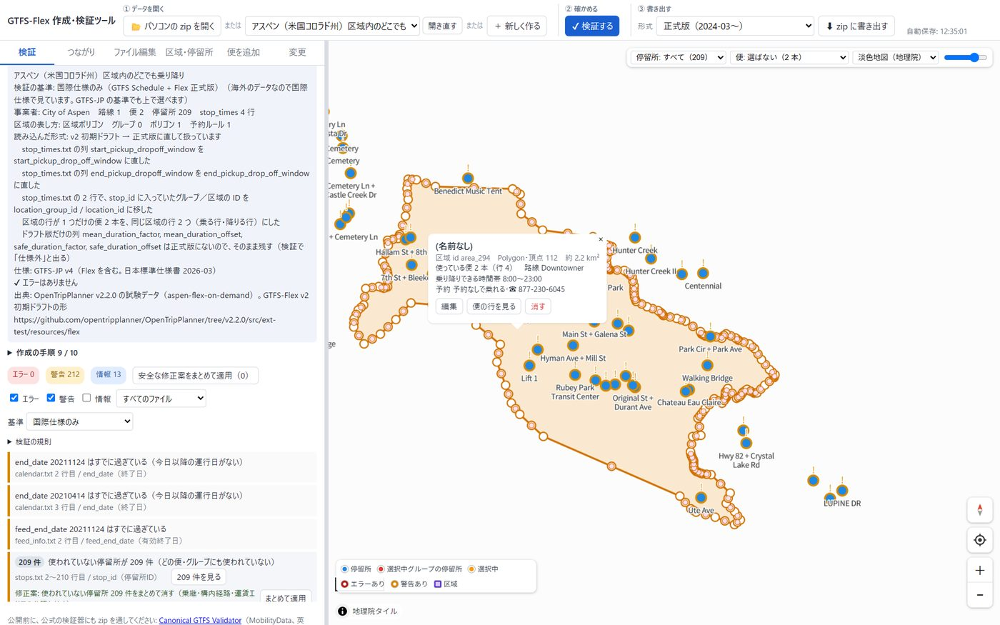
6ファイル編集（表・フォーム・テキスト）
「ファイル編集」タブで、ファイルを選んで直接直せます。表（絞り込み・行や列の追加と削除）、フォーム（1 行ずつ、欄の説明つき）、テキスト（CSV をそのまま貼り付け）の 3 通りです。仕様にない列やファイルも残します。
別ウインドウで開く ↗ で、ファイル編集を大きな別のウインドウに出せます。直すと元の画面の地図・検証・変更にすぐ反映され、検証の一覧から行へ移ると別ウインドウの表がその行を示します。閉じるか 元の画面に戻す で、元のタブに戻ります（ブラウザがポップアップを止めているときは、このサイトのポップアップを許可してください）。
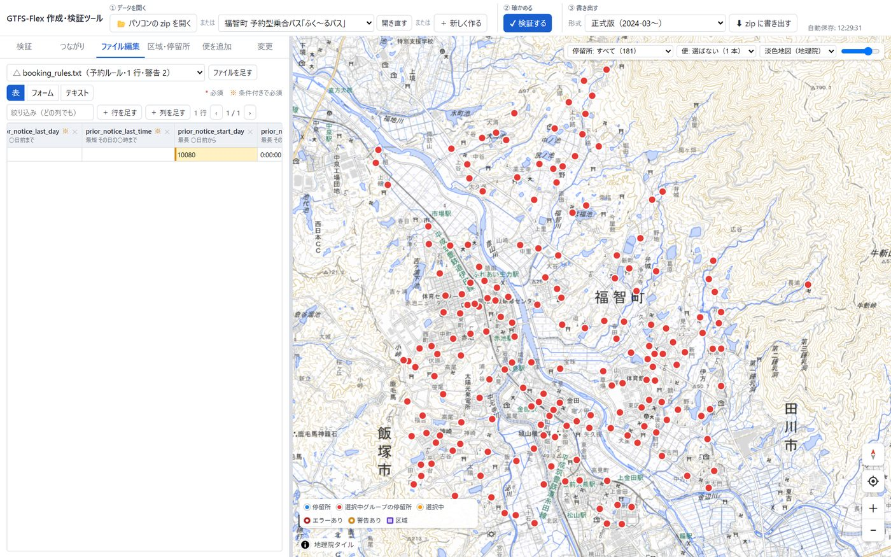
7変更を確かめる
「変更」タブで、読み込んだときから追加・更新・削除した行の件数と中身を、ファイルごとに見られます。1 件ずつ 元に戻す ことも、修正を捨てて元に戻す で全部を元に戻すこともできます。
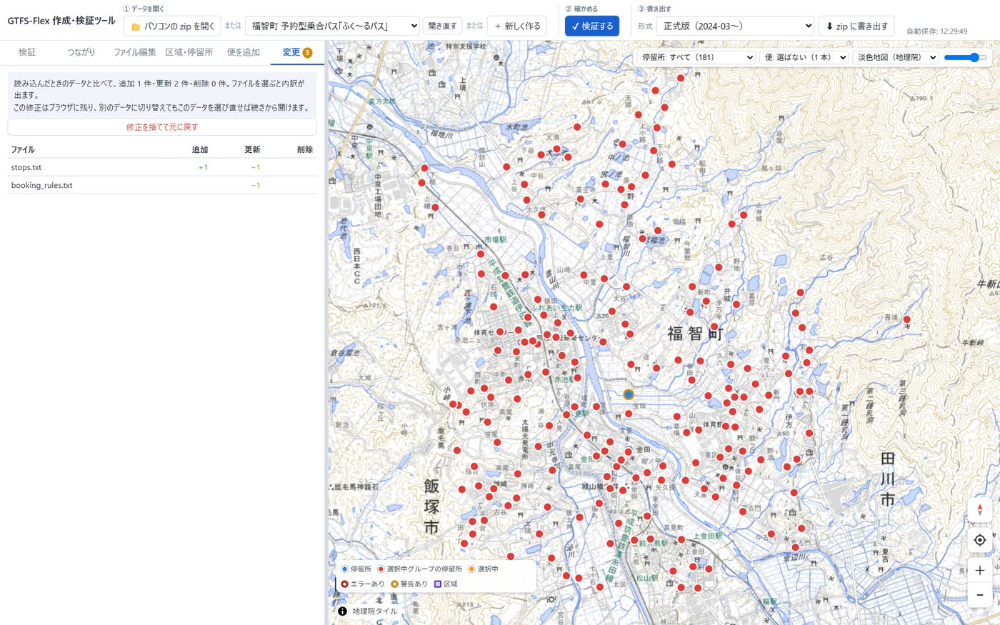
8書き出す
「③ 書き出す」で形式を選んで ⬇ zip に書き出す。値が空の任意の列は省きます。書き出したデータは、元のデータと比べて編集した所だけが違います。
| 形式 | 使いどころ |
|---|---|
| 正式版（2024-03〜） | ODPT への提供など、ふつうはこれ |
| v2 後期ドラフト（2022〜23） | 古い版しか読めないシステム向け |
| v2 初期ドラフト（2020） | 同上 |
| Flex を除く | Google 乗換案内向け（Flex を含むデータは受け付けないため、通常の GTFS だけにする） |
使っているデータ
| 公共交通オープンデータセンター（ODPT） | デマンド交通（GTFS-Flex）16 件: 五所川原市・前橋市・白馬村（2 件）・福智町・宇美町・宗像市・川越市・紀の川市・安中市・富岡市・昭和村・玉村町・坂井市・平川市・瑞穂町（CC BY 4.0）。「公開データから選ぶ」で開けます |
|---|---|
| 地理院タイル（国土地理院） | 地図の背景（淡色地図・標準地図・白地図・写真） |
| OpenStreetMap | 地図の背景（© OpenStreetMap contributors） |
| OpenTripPlanner | 海外の例として開ける GTFS-Flex の試験データ 3 件（アスペン・コブ郡・リンカーン郡） |
仕様の根拠: GTFS Schedule リファレンス、国土交通省「GTFS-JP 4.0 ガイドライン」（2026-03-19）。